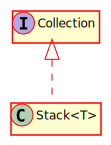

Type Parameters
T
Hierarchy-Diagram
{kind=link}
Legend
 class
class
 interface
interface
Hierarchy
- Stack
Implements
Index
Constructors
constructor
Constructs a new stack
Type Parameters
T
Parameters
maxElements: number = 100
The maximum size of the stack
Returns Stack<T>
Properties
Private MAX_
The maximum number of elements in the Stack
Private head
The head of the stack
Private stack
The internal representation of the stack
Methods
clear
Clears the contents of the data structure
Returns void
for
Iterates through all of the items in this data structure.
Parameters
func: ((item: T, index?: number) => void)
Parameters
item: T
Optional index: number
Returns void
Returns void
is
Returns true if this stack is empty
Returns boolean
A boolean that represents whether or not the stack is empty
peek
Returns the element currently at the top of the stack
Returns T
The item at the top of the stack
pop
Removes an item from the top of the stack
Returns T
The item at the top of the stack
push
Adds an item to the top of the stack
Parameters
item: T
The new item to add to the stack
Returns void
size
Returns the number of items currently in the stack
Returns number
The number of items in the stack
to
Converts this stack into a string format
Returns string
A string representing this stack
A LIFO stack with items of type T